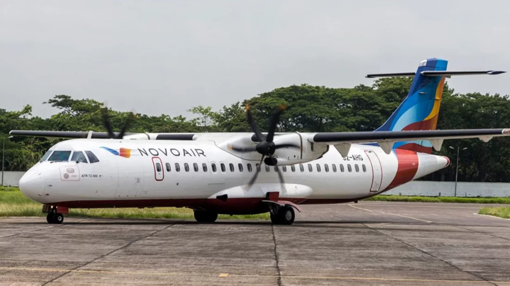

| সর্বশেষ | বিশেষ সংবাদ | সারাদেশ | রাজনীতি | বিশ্ব সংবাদ |
দৈনিক ইত্তেফাক
‘গ্রীন লাইন’র পর বরিশাল রুটে বন্ধ হচ্ছে নভোএয়ার
ইত্তেফাক অনলাইন ডেস্ক
দক্ষিণাঞ্চলবাসীর স্বপ্নের পদ্মা সেতু চালু হওয়ায় বেড়েছে সড়ক পথে যাত্রীদের যাতায়াত। ঢাকা থেকে মাত্র তিন ঘণ্টার মধ্যে বরিশাল কেন্দ্রীয় বাস টার্মিনালে আসতে পারছে যাত্রীরা। গত মাসের ২৫ জুন উদ্বোধন এবং ২৬ জুন সর্বসাধাণের জন্য পদ্মা সেতু উন্মুক্ত করার পর নৌ-পথে ও আকাশ পথে যাত্রী হ্রাস পেতে শুরু করে। মাত্র এক মাসের ব্যবধানে লঞ্চ ও বিভিন্ন এয়ারলাইনস কোম্পানি ভাড়া কমিয়েও টিকে থাকতে পারছে না। সম্প্রতি নৌ-পথের জনপ্রিয় দিবা সার্ভিস গ্রিন লাইন ওয়াটার ওয়েজ যাত্রী সংকটে ঢাকা-বরিশাল রুটের সার্ভিস বন্ধ করে দিয়েছে। আকাশ পথের এয়ারলাইনস নভোএয়ার যাত্রী সংকটের মুখে ১৭ থেকে ২০ জুলাই সার্ভিস রেখে চালু করলেও আগস্ট থেকে বরিশাল-ঢাকা রুটের সার্ভিস বন্ধের ঘোষণা দিয়েছে। নভোএয়ার এর বরিশাল সিনিয়র এক্সিকিউটিভ সেলস্ এন্ড মার্কেটিং আরেফিন জানান, আগামী ১ আগস্ট থেকে ২ মাসের জন্য সাময়িকভাবে তাদের ফ্লাইট বন্ধ ঘোষণা করেছে কর্তৃপক্ষ। বরিশাল বিমানবন্দর সূত্রে জানা গেছে, পদ্মা সেতু দিয়ে যান চলাচল শুরু হওয়ার পর ঢাকা-বরিশাল রুটে যাত্রীসংখ্যা কমতে থাকে। এতে দুশ্চিন্তায় পড়ে বেসরকারি বিমানসংস্থা নভোএয়ার ও ইউএস বাংলা। যাত্রী ধরে রাখতে তারা ঈদুল আজহার পর ভাড়া কমিয়ে দেয়।

|
অনুসন্ধান বাংলা কনভার্টার প্রবাস মুক্তিযুদ্ধের স্মারক |
আর্কাইভ ভিডিও সাহিত্য বাংলাদেশ ৫০ |
ছবি পরিবেশ চাকরি মুজিববর্ষ |
বিজ্ঞাপন যোগাযোগ গোপনীয়তার নীতি শর্তাবলী |
||